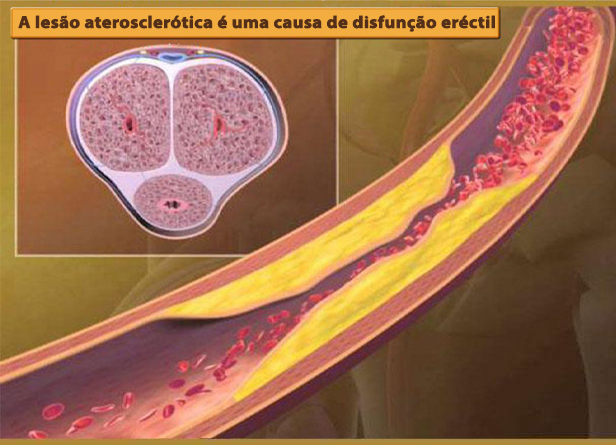
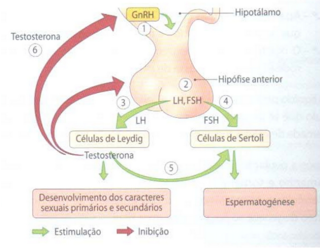
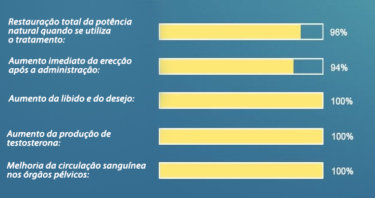

Restaurar a potência mesmo após 70 anos: o Centro Internacional de Andrologia começou a fornecer um novo remédio eficaz* para restaurar a potência.
*Estudos demonstraram que este produto é 3-4 vezes mais eficaz do que os estimulantes sintéticos.
Leia como pode obter a entrega do produto na Europa neste artigo.
Na Primavera de 2013, uma coisa incrível aconteceu no congresso anual do Centro Internacional de Andrologia. Toda a audiência aplaudiu de pé, durante 10 minutos, o cientista no pódio. O cientista foi o Professor português Eduardo Moura, um dos melhores urologistas do seu tempo. Depois de se formar na universidade, Eduardo mudou-se para os EUA e tornou-se lá professor. Foi ele e um grupo de cientistas que criaram uma preparação única capaz de curar completamente homens com problemas de potência, produzindo hormonas luteinizantes e estimulantes do folículo, que actuam na glândula pituitária.
Eduardo Moura (1936-2013)
O principal cirurgião urologista, doutor de medicina, professor, inventor de uma droga única para restaurar a potência, morreu logo após o seu triunfo, em 2013.
A morte inesperada do cientista impediu-o de lançar o produto na produção. Isto só foi feito pelos seus apoiantes nos EUA oito anos mais tarde. Em 2021, o novo medicamento foi submetido aos ensaios clínicos necessários, cujos resultados confirmaram mais uma vez a sua elevada eficácia: ajuda 96 em cada 100 homens a restaurar totalmente a potência, mesmo na velhice.
Como o evento despertou o interesse do público, o Congresso criou a Fundação Beneficente Eduardo Moura. O principal objectivo da fundação é ajudar os homens que têm problemas de erecção; como parte do programa, qualquer homem que viva na Europa pode obter um produto desenvolvido por Moura a um preço especial!
73% dos homens tornam-se impotentes aos 40 anos de idade, um perigo de saúde precária!
Há pelo menos dez anos que os médicos têm vindo a dizer que os homens têm sofrido de problemas de potência numa idade mais precoce do que antes. As razões para o desaparecimento precoce da capacidade sexual são bem conhecidas: estilo de vida sedentário, maus hábitos, má alimentação, má ecologia, etc.
No entanto, poucas pessoas pensam nos problemas da vida que os homens podem levar a problemas na esfera sexual.

Com a prolongada falta de vasos de potência do pénis são preenchidos com placas ateroscleróticas, o que acaba por levar ao desenvolvimento da impotência total.
Etapas da impotência e suas consequências:
Fase 1: A potência desaparece intermitentemente, por exemplo, depois de beber álcool ou por si só. Por vezes, o humor para o sexo está ausente. A maioria das pessoas atribui isto a trabalho árduo, stress, etc. No entanto, este é já o primeiro sinal de que só irá piorar com o tempo.
Etapa 2: A potência desaparece cada vez mais frequentemente. Mesmo quando a potência está lá, não é tão forte como antes. O pénis pode cair durante a relação sexual ou quando se coloca um preservativo. Como regra, durante este período o homem começa a pensar no problema, mas limita-se a tomar ocasionalmente estimulantes sintéticos.
Etapa 3: A potência aparece pouco frequentemente. A libido diminui acentuadamente. A pessoa torna-se irritável, a energia e o desejo de fazer algo desaparece. Os problemas familiares começam: disputas no seio da família, infidelidade entre as mulheres, divórcio podem ocorrer.
Etapa 4: impotência total. Mesmo os estimulantes não ajudam. Até 91% dos homens nesta fase sentem-se sozinhos; as mulheres raramente vivem com impotência, e se o fazem, sofrem. A depressão desenvolve-se, assim como várias enfermidades físicas. Os nossos corpos são concebidos para que a sua função principal seja a reprodução. Assim que o corpo o perde, começa a deteriorar-se muito rapidamente.
Na ausência de potência durante muito tempo, o fornecimento de sangue aos órgãos pélvicos desaparece, levando ao desenvolvimento de numerosas doenças perigosas.
As fotos estão no fundo do Centro Internacional de Andrologia. Por detrás de cada fotografia está uma tragédia pessoal.
O cancro da próstata num homem de 48 anos. O cancro da próstata é a causa mais comum de morte (até 88%) em homens que sofrem de impotência. Ocorre devido à falta de circulação sanguínea normal nos órgãos pélvicos e à estase purulenta na própria próstata.
Gangrena (necrose) do pénis de um homem de 44 anos devido a uma prolongada falta de potência. Teve de ser realizada uma operação de emergência, mas houve um grave envenenamento do sangue e o homem não pôde ser salvo.
Pedras nos rins. A doença da pedra nos rins também ocorre devido à diminuição do fornecimento de sangue aos pequenos órgãos pélvicos. É uma condição muito dolorosa que requer frequentemente uma cirurgia urgente para remover pedras ou o próprio rim.
Devido ao facto de que a potência pode desaparecer completamente, muitos homens tentam livrar-se de problemas de potência assim que começam a aparecer. Contudo, até há pouco tempo era impossível restaurar completamente a potência: os medicamentos disponíveis (por exemplo, estimulantes) melhoram a potência apenas durante um certo tempo.
Este medicamento único, criado por cientistas americanos sob a orientação de Eduardo Moura, ajuda a recuperar a potência EXATAMENTE naturalmente, ou seja, é restaurado (como nos homens saudáveis) sem tomar estimulantes.
Pedimos ao Doutor em Medicina, Professor e Chefe do Departamento de Urologia do Instituto de Investigação que nos falasse sobre o novo medicamento, chamado PX-300.
"Tem sido o desenvolvimento mais desafiante mas mais necessário no campo da urologia".
Antônio Maciel diz-nos porque se perdeu a potência e como restaurá-la.
Correspondente: Antônio, diga-nos por favor porque é que a potência está a diminuir e como parar este processo?
Maciel: Olha, a tarefa principal de cada homem é reproduzir-se. É construído no ser humano para que este processo possa ter lugar sem interrupção. Cada ser humano tem três períodos. Quando está a crescer, quando pode reproduzir-se e quando está a desvanecer-se. Pelo nível de testosterona no sangue, o corpo sabe em que período se encontra. É máximo durante o período reprodutivo: mais de 11 nmol/l. Com a idade (após 45 anos) decresce: o homem entra na terceira fase. Isto deve acontecer em condições normais; na realidade, é um processo natural.
Contudo, os estilos de vida modernos e, mais importante ainda, o facto de os homens de hoje não se moverem muito, fazem com que os níveis de testosterona comecem a descer anormalmente cedo. Após a idade de 30 anos o seu nível em 93% dos homens testados é em média de 5 nmol/l, o que é duas vezes inferior à norma! Naturalmente, isto leva a problemas de potência, e claro que as úlceras que ocorrem quando não há fornecimento normal de sangue aos órgãos pélvicos aparecem muito mais cedo.
Correspondente: Como pode o PX-300 ajudar os homens?
Maciel: É importante compreender que o PX-300 não é um fármaco estimulante. O seu objectivo é algo mais, nomeadamente, a activação da produção de testosterona pelo corpo, em vez de uma dilatação anormal e geralmente perigosa dos vasos sanguíneos na virilha, como fazem as drogas químicas, por exemplo.
Os ingredientes activos contidos em PX-300 estimulam a produção activa de hormonas luteinizantes e estimulantes do folículo, que por sua vez estimulam a hipófise. A própria glândula pituitária contribui para a produção da hormona testosterona.
PX-300 tem um efeito complexo sobre o corpo. Não quero entrar em detalhes das reacções químicas que ocorrem no seu corpo, porque poucas pessoas as compreenderiam. Gostaria de salientar que o PX-300 melhora simultaneamente a erecção logo após a sua ingestão e ajuda a restaurar a função da glândula pituitária, ou seja, restabelece a potência natural, que aparece por si só sem qualquer medicação. Isto inclui pessoas com mais de 50-60 anos de idade. Usando PX-300, pode ter uma potência estável mesmo na velhice.
A própria testosterona é extremamente útil para um homem; afinal de contas, a sua falta leva ao envelhecimento do corpo e ao desenvolvimento de uma série de doenças. A maioria dos andrologistas experientes prescrevem testosterona para homens com mais de 50 anos de idade.

O processo de produção de testosterona pelas células de Leydig, o "sinal" para a produção pela hipófise, que afecta o PX-300.
Correspondente: A normalização da produção de testosterona é uma solução muito simples, não é? Isto já não foi pensado antes?
Maciel: A solução é simples. No entanto, influenciar este processo não é fácil. Eduardo Moura descobriu uma substância que pode influenciar indirectamente a glândula pituitária. Durante todo este tempo, temos vindo a desenvolver uma droga baseada nela. Até hoje, o PX-300 é a única droga tão eficaz contra a impotência sexual masculina. Os estimulantes ainda nem sequer chegaram perto. É também importante que o PX-300 não tenha efeitos secundários. Absolutamente. Isto também o destaca entre os produtos que contêm sildenafil.
Correspondente: Por favor, diga-me, o PX-300 passou nos ensaios clínicos, o que é que eles mostraram?
Maciel: Os ensaios clínicos têm sido realizados muitas vezes. E cada vez que mostraram resultados espantosos.
Mostrar-vos-ei os resultados do ensaio clínico mais recente realizado no Outono de 2020 no Centro Científico de Urologia. Um total de cerca de 200 homens com problemas de potência de gravidade variável tomaram parte neles.
Resultados de um ensaio clínico de PX-300:

Além disso, o website do Instituto de Investigação Urológica realizou um inquérito de 7 meses entre aqueles que utilizaram o PX-300 para combater a impotência. A única questão é: "O PX-300 ajudou-o a combater a impotência? 5.478 pessoas já votaram. Pode ver os resultados do inquérito por si próprio.
Inquérito do Instituto de Investigação Urológica
sobre os resultados da utilização do PX-300:
Correspondente: Correspondente: É verdade que, ao abrigo do programa actual, qualquer homem pode obter o PX-300 com um desconto significativo?
Maciel: Maciel: Sim, é verdade. O Instituto de Investigação Urológica está agora a distribuir o PX-300 a um preço especial com desconto na Europa como parte do programa Saúde do Homem.
A minha opinião pessoal é que esta é uma iniciativa muito importante e correcta, uma vez que os problemas de potência estão a aparecer cada vez mais frequentemente nos homens, e muitas vezes levam à destruição de famílias, bem como à perda da saúde dos homens. Acredito que este produto irá salvar muitas famílias, bem como reduzir o número de drogas estimulantes que os homens tomam, tais como estimulantes sintéticos, que fazem mais mal do que bem.
Correspondente: Como se torna membro do programa e obtém o PX-300, o que precisa de fazer?
Maciel: É bastante simples, aqui estão as 3 condições necessárias para participar no programa:
- 1. Estar na Europa.
- 2. Preencher um formulário de encomenda oficial
- 3. Pagar a mercadoria no momento da entrega.
Atenção! O ÚLTIMO DIA APLICAR A PX-300 é nclusive. Depois disso, só pode comprá-lo ao preço de mercado!

78 euro 39 euro
Ainda faltam alguns dias para o fim da promoção:
- - : - - : - -
 Maciel
Maciel Ana Ribeiro
Ana Ribeiro  Fernando
Fernando  Alex
Alex  Eugênia
Eugênia
 Guilherme
Guilherme  Ernesto
Ernesto